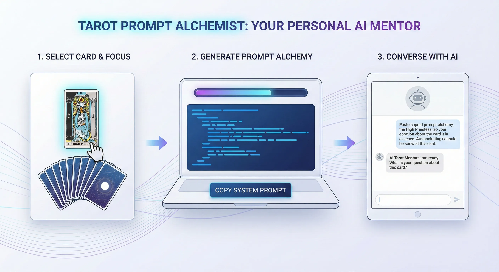

After "Tarot Prompt Alchemist" went live, the most common architecture question I got was: why not just wire it up to an API and ship a one-click closed tarot platform?
The answer comes from how I think about product architecture in the generative-AI era, plus a cold look at compute cost and the operational logic underneath.

# Closed Oracle vs. Open Prompt Framework
Look at the market. Most AI tarot services run a black-box API wrap: frontend takes input, backend returns a one-shot reading. I went the other way. I went with prompt engineering, packaging the environment instructions into something the user runs inside their own LLM of choice (ChatGPT, Claude, whatever they live in).
The two designs reflect different views on product positioning and how much agency you hand to the user:
Closed Reading Platform (Black Box)
-
Lower cognitive bar: smooth UX, no need to understand the underlying logic or switch environments.
-
Compute cost shifts to the developer: dev pays the token bill. The business model lands on paywalls or ads, and UX takes the long-term hit.
-
Shallow context: single-shot request architecture cannot run multi-turn depth or converge on the user's actual emotional state.
Environment Prompt Generator (Open Framework)
-
Compute autonomy (unlimited inference): runs on the user's local or existing LLM account. Breaks the hard API quota wall. Deep interaction with zero marginal cost.
-
User empowerment: the system turns from a one-way oracle into a two-way counseling space with memory. Interpretation rights and data privacy go back to the user.
-
Operational friction: needs basic prompt literacy. Copy-paste and environment switching add steps.
# Underneath: Dynamic Projection and Information Convergence
The reason I went open-prompt comes from how tarot actually runs underneath.
Tarot is contextual inference in motion. You cannot collapse it into "card A upright equals outcome B." The accuracy of a reading depends on the live context, the user's psychological projection, and the dynamic focus that emerges across the conversation.
The deeper meaning of a card surfaces through experience-library lookup plus multiple turns of back-and-forth that converge on the real question. Wrap that into a one-click API and the AI defaults to generic, low-fit readings. That guts the original purpose of tarot — a tool for mental sorting that needs dialogue to untangle thinking.
# Role Decoupling: Outsource the Logic, Own the Environment
From there, the system architecture comes down to role decoupling: hand the heavy parsing and logical inference back to a general-purpose generative AI; keep the dev surface focused on high-precision environment variables and boundary instructions.
A deeply tuned system prompt locks down the AI's role frame and empathy weights, and sets hard anti-hallucination boundaries. More importantly, the instructions force the AI to trigger a "ask back" gate before producing a final read, so it pulls more parameters out of the user first. That pattern turns the LLM from a one-way text generator into a context-aware dynamic analysis model.
"In the trade-off between compute cost and product value, I would rather hand the user a precisely packaged key — useful inside an unlimited space, with full ownership of the introspection — than build a closed terminal that is rate-limited by my API budget and can only return standardized answers."
That is the product philosophy here. Closed platforms lower the bar for the general public, sure. The compute liberation and conversational depth of the open framework is what makes generative AI actually valuable for psychological work over the long run. Ship the navigation algorithm. Skip the fixed destination coordinates. For a technical person, that is how you give the user real agency.